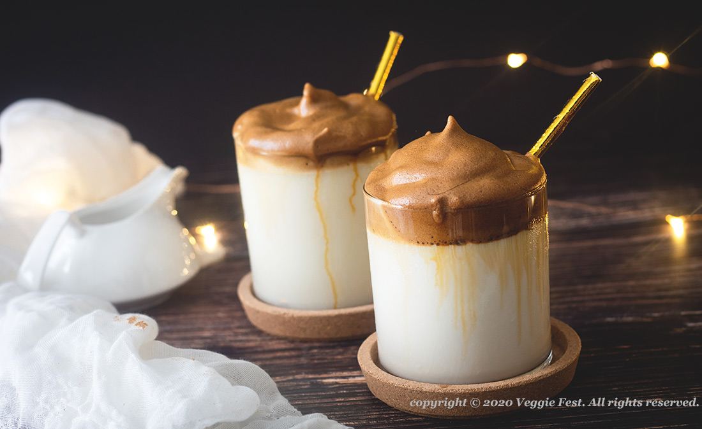

Cafe Dalgona

El Café Dalgona o también conocido como café batido o espumoso,
se hizo viral a principios de 2020 en redes sociales cuando el actor Jung Il-woo
en Corea del Sur, lo probó y lo comparó con una bebida similar en Macao.
Esta, sabía a un dulce coreano llamado dalgona.
Ingredientes
- 2 cdas de café molido
- 2 cdas de azúcar rubia
- 1 cda de miel
- 2 cdas de agua caliente
- 150 ml de leche
- Canela molida
Preparación
- Agregar todos los ingredientes, excepto la leche, en un vaso largo y mezclar con el espumador hasta tener una espuma espesa y del doble de su tamaño inicial. Reposar.
- En otro vaso mediano o una taza, poner hielo hasta la mitad, los 150 ml de leche y luego verter la espuma. Batir nuevamente la espuma si es necesario.
- Finalmente, espolvorear la canela molida sobre la espuma del Café Dalgona. Revolver y a disfrutar.